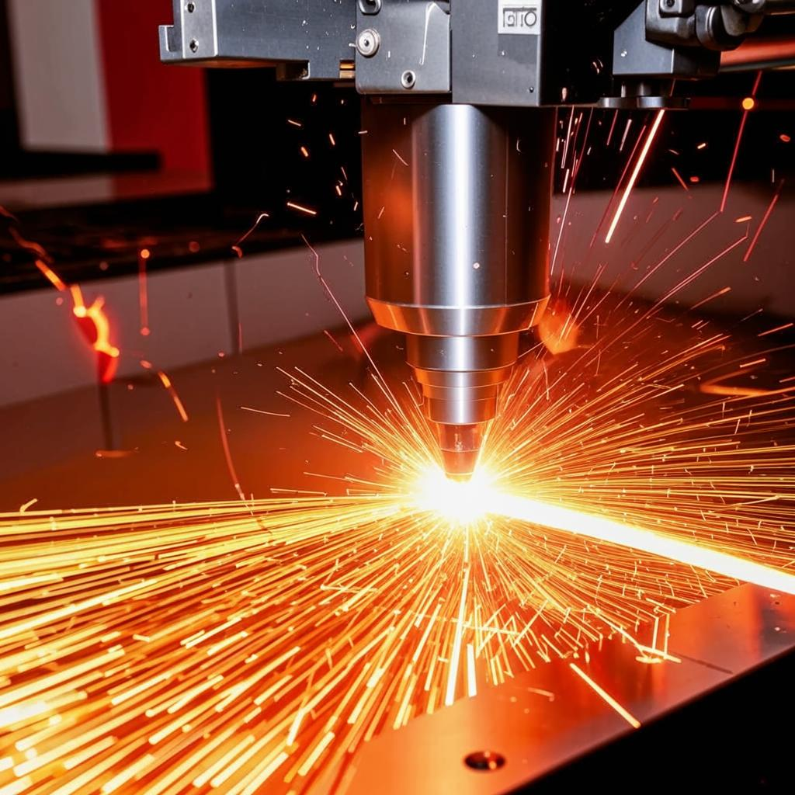

Лазерная резка металла: преимущества и недостатки
В современном мире металлообработка играет важную роль в различных отраслях промышленности, строительства и производства. Одним из наиболее популярных методов обработки металла является лазерная резка. В этой статье мы рассмотрим основные преимущества и недостатки этого метода.

Преимущества лазерной резки:
- Высокая точность. Лазерная резка позволяет получать детали с высокой точностью размеров и качеством поверхности. Это особенно важно при изготовлении сложных и точных деталей.
- Скорость работы. Лазерные станки могут работать быстро и эффективно, что позволяет сократить время на изготовление деталей.
- Качество реза. Лазерный луч создаёт чистый и аккуратный рез без заусенцев и деформаций, что упрощает дальнейшую обработку деталей.
Однако, как и у любого метода обработки, у лазерной резки есть свои недостатки:
- Стоимость оборудования. Лазерное оборудование может быть дорогостоящим, особенно для небольших мастерских или производств.
- Требования к квалификации персонала. Для работы на лазерном станке требуется квалифицированный персонал, который сможет правильно настроить параметры резки и обеспечить безопасность работы.
Таким образом, лазерная резка является эффективным методом обработки металла, который имеет свои преимущества и недостатки. Выбор метода зависит от конкретных требований к деталям и возможностей производства.